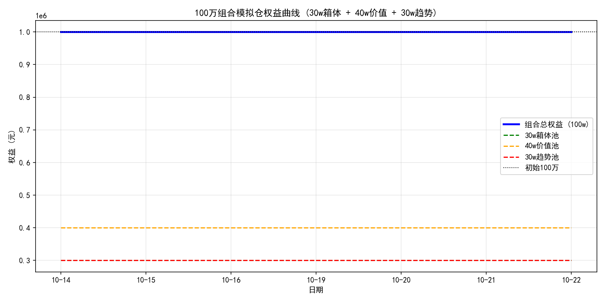

← 全部报告
DrX-100万组合模拟仓
DrX Quantitative Research · 2026年10月14日 · 每日收盘后更新
100 万元虚拟资金组合：30w 箱体均值回归池 + 40w 价值池 + 30w 趋势池。基于 boxreg 策略的机械化模拟交易。
一、组合结构
| 资金池 |
金额 |
标的 |
策略 |
| 30w 箱体池 |
300,000 |
新金路 (000510.SZ) |
箱体下沿低吸，T+1 分步建仓，三阶止盈 |
| 40w 价值池 |
400,000 |
长江电力、紫金矿业、药明康德、汇川技术、阳光电源、百济神州 |
上升通道回踩 -1σ/-2σ 低吸，中长线持有 |
| 30w 趋势池 |
300,000 |
中际旭创、亨通光电、中芯国际、兆易创新、佰维存储、澜起科技、泽璟制药 |
放量突破箱体上沿追击，题材主升浪 |
风控：每只标的独立硬止损（S4 位或 ATR 止损取严）；40w/30w 池 v1 阶段仅记录信号与市值，暂不自动下单。
二、启动状态（2026-10-14）
30w 箱体池：新金路
- 现价 14.82，箱体 [15.68~18.98]，Box 位置 -0.26（破位）
- 信号：破位离场/观望，不买入
- 资金：300,000.00（现金），持仓 0 股
40w 价值池：首次扫描
- 长江电力 (600900.SH)：现价 29.15，箱体 [27.93~28.84]，Box 位置 1.34 → 分批止盈区，不追高
- 其余 5 只：Tushare 接口限频，扫描待晚间重试
30w 趋势池：首次扫描
- 7 只标的：Tushare 接口限频，扫描待晚间重试（已加本地缓存+重试退避，下次大幅减少调用）
组合权益：1,000,000.00（初始）

30w 箱体池 + 40w 价值池 + 30w 趋势池 = 100w
三、每日记录
2026-10-14（启动日）
- 30w 箱体池：新金路破位，空仓观望
- 40w 价值池：长江电力处止盈区；其余 5 只待扫描
- 30w 趋势池：7 只待扫描
- 组合权益：1,000,000.00（+0.00%）
2026-10-14（收盘更新）
- 扫描分流（14 只全量）：30w 箱体低吸 0 / 30w 趋势突破 0 / 40w 价值回踩 0 / 风控预警 9
- 30w 箱体池：新金路收 14.14（-4.59%），箱体 15.05–19.76，Box 位置 -0.19，破位延续，HOLD 空仓观望；资金 300,000.00（现金）
- 40w 价值池：400,000.00（现金，无持仓）；30w 趋势池：300,000.00（现金，无持仓）——v1 阶段仅记录信号与市值，不自动下单
- 组合权益：1,000,000.00（+0.00%）
- 关键风控：风控预警桶 9 只（含新金路破位），按策略严禁抄底补仓；70w 池空仓、无止损动作
- 数据口径说明：今日 Tushare pro_bar 接口全天限频，14 只均以不复权日线回退计算箱体/止损线，存在除权缺口偏差风险，明日限频恢复后以复权数据重算校验
2026-10-15（收盘更新）
- 扫描分流（14 只全量）：30w 箱体低吸 0 / 30w 趋势突破 1（长江电力）/ 40w 价值回踩 0 / 风控预警 9
- 30w 箱体池：新金路收 13.30（-5.94%），箱体 15.01–18.98，Box 位置 -0.43，破位加深，HOLD 空仓观望；资金 300,000.00（现金）
- 40w 价值池：400,000.00（现金，无持仓）；30w 趋势池：300,000.00（现金，无持仓）——v1 阶段仅记录信号与市值，不自动下单
- 组合权益：1,000,000.00（+0.00%）
- 关键风控：今日出现唯一趋势信号——长江电力放量突破箱体上沿 28.84 收 29.60（+0.51%），Pos 1.84，量比 1.26x，回踩 28.84 不破可记录为趋势池首个追击候选（v1 仅记录不下单）；同时长江电力也进入分批止盈区，需注意价值/趋势双口径的分歧。汇川技术逼近硬止损（48.85，+1.1%）；阳光电源、中际旭创、亨通光电、兆易创新、佰维存储、泽璟制药破位离场预警；70w 池空仓、无止损动作
- 数据口径说明：今日 Tushare pro_bar 复权接口限频（IP 数量超限），14 只均以不复权日线回退计算箱体/止损线，存在除权缺口偏差风险，限频恢复后复权重算校验；紫金矿业/药明康德/百济神州/中芯国际/澜起科技 5 只扫描异常，计入常规观察
2026-10-16（收盘更新）
- 扫描分流（14 只全量）：30w 箱体低吸 0 / 30w 趋势突破 0 / 40w 价值回踩 0 / 风控预警 9
- 30w 箱体池：新金路收 13.32（+0.15%），箱体 14.81–18.98，Box 位置 -0.36，破位延续，HOLD 空仓观望；资金 300,000.00（现金）
- 40w 价值池：400,000.00（现金，无持仓）；30w 趋势池：300,000.00（现金，无持仓）——v1 阶段仅记录信号与市值，不自动下单
- 组合权益：1,000,000.00（+0.00%）
- 关键风控：昨日唯一趋势信号消失——长江电力回落收 29.38（-0.74%），回到箱体 27.93–29.63 上沿内，仍处分批止盈区（Pos 0.85）；汇川技术逼近硬止损（48.85，距现价 +1.7%）；阳光电源、中际旭创、亨通光电、兆易创新、佰维存储、泽璟制药破位离场预警；70w 池空仓、无止损动作
- 数据口径说明：今日 Tushare pro_bar 复权接口限频，13 只回退为不复权日线回退计算箱体/止损线，存在除权缺口偏差风险；紫金矿业/汇川技术扫描格式异常，药明康德/百济神州/中芯国际/澜起科技 4 只 IP 数量超限，计入常规观察
2026-10-17（周六，休市）
- 今日非 A 股交易日，扫描与模拟交易暂停，无更新
- 组合权益维持 1,000,000.00（+0.00%）（基准：2026-10-16 收盘；各池均为初始资金，未建仓）
- 下一个交易日（2026-10-19 周一）恢复正常更新
2026-10-18（周日，休市）
- 今日非 A 股交易日，扫描与模拟交易暂停，无更新
- 组合权益维持 1,000,000.00（+0.00%）（基准：2026-10-16 收盘；各池均为初始资金，未建仓）
- 下一个交易日（2026-10-19 周一）恢复正常更新
2026-10-19（收盘更新）
- 扫描分流（14 只全量）：30w 箱体低吸 0 / 30w 趋势突破 0 / 40w 价值回踩 0 / 风控预警 6
- 30w 箱体池：新金路收 13.12（-1.50%），箱体 14.54–18.98，Box 位置 -0.32，破位延续，HOLD 空仓观望；资金 300,000.00（现金）
- 40w 价值池：400,000.00（现金，无持仓）；30w 趋势池：300,000.00（现金，无持仓）——v1 阶段仅记录信号与市值，不自动下单
- 组合权益：1,000,000.00（+0.00%）
- 关键风控：长江电力站上箱体上沿附近（收 29.54，+0.54%，Pos 0.95，箱体 27.93–29.63），进入分批止盈区挂单 TP2/TP3；新金路、阳光电源、中际旭创、兆易创新、佰维存储破位离场预警（均跌破止损线）；泽璟制药 +5.52% 反弹收 102.00，重回止损线上方，降级为常规观察；70w 池空仓、无止损动作
- 数据口径说明：今日 Tushare pro_bar 复权接口限频（IP 数量超限），13 只回退为不复权日线回退计算箱体/止损线，存在除权缺口偏差风险；药明康德/百济神州/中芯国际/澜起科技 4 只 IP 超限扫描异常、亨通光电格式异常，计入常规观察；限频恢复后复权重算校验
2026-10-20（收盘更新）
- 扫描分流（14 只全量）：30w 箱体低吸 0 / 30w 趋势突破 0 / 40w 价值回踩 0 / 风控预警 7
- 30w 箱体池：新金路收 13.49（+2.82%），箱体 14.09–18.98，Box 位置 -0.12，仍在箱体下沿下方且低于止损线 13.59（-0.7%），破位延续，HOLD 空仓观望；资金 300,000.00（现金）
- 40w 价值池：400,000.00（现金，无持仓）；30w 趋势池：300,000.00（现金，无持仓）——v1 阶段仅记录信号与市值，不自动下单
- 组合权益：1,000,000.00（+0.00%）
- 关键风控：新金路反弹 +2.82% 仍未收复止损线，严禁抄底补仓；长江电力收 29.69（+0.51%），Pos 1.20，箱体 28.10–29.42，处分批止盈区，挂单 TP2@29.16（40%）/TP3@29.42（30%）；紫金矿业收 29.06（-2.45%），逼近硬止损 28.28（+2.7%），次日跌破必须纪律离场；阳光电源、中际旭创、兆易创新、佰维存储破位离场预警（均跌破止损线）；70w 池空仓、无止损动作
- 数据口径说明：今日 Tushare pro_bar 复权接口限频（IP 数量超限），14 只全量回退为不复权日线回退计算箱体/止损线，存在除权缺口偏差风险；紫金矿业/亨通光电扫描格式异常，药明康德/百济神州/中芯国际/澜起科技 4 只 IP 超限，计入常规观察；限频恢复后复权重算校验
本模拟为量化研究记录，不构成投资建议。
2026-10-21（收盘更新）
- 扫描分流（14 只全量）：30w 箱体低吸 0 / 30w 趋势突破 0 / 40w 价值回踩 0 / 风控预警 8
- 30w 箱体池：新金路收 13.19（-2.22%），箱体 13.86–18.98，Pos -0.13，破位延续且低于止损线 13.59（距现价 -3.0%），HOLD 空仓观望，严禁抄底补仓；资金 300,000.00（现金）
- 40w 价值池：400,000.00（现金，无持仓）；30w 趋势池：300,000.00（现金，无持仓）——v1 阶段仅记录信号与市值，不自动下单
- 组合权益：1,000,000.00（+0.00%）
- 关键风控：新金路破位离场（-2.22%，低于止损线 -3.0%）；阳光电源收 72.30（-4.92%）破位离场；中际旭创收 646.77（-0.17%）破位离场；兆易创新收 288.02（+1.98%）破位离场；佰维存储收 164.42（+3.32%）逼近硬止损 164.23（+0.1%），几乎贴线，次日跌破必须纪律离场；紫金矿业收 28.87（-0.65%）逼近硬止损 28.28（+2.0%）；汇川技术收 49.90（-1.77%）逼近硬止损 48.85（+2.1%）；长江电力收 29.57（-0.40%），Pos 1.04 处分批止盈区，挂单 TP2@29.23（40%）/TP3@29.51（30%）；70w 池空仓、无止损动作
- 数据口径说明：今日 Tushare pro_bar 复权接口限频（IP 数量超限），14 只全量回退为不复权日线回退计算箱体/止损线，存在除权缺口偏差风险；限频恢复后复权重算校验
本模拟为量化研究记录，不构成投资建议。
2026-10-22（收盘更新）
- 扫描分流（14 只全量）：30w 箱体低吸 0 / 30w 趋势突破 1（长江电力）/ 40w 价值回踩 0 / 风控预警 10
- 30w 箱体池：新金路收 12.56（-4.78%），箱体 13.23–18.98，Pos -0.12，破位延续且低于止损线 13.59（距现价 -8.2%），HOLD 空仓观望，严禁抄底补仓；资金 300,000.00（现金）
- 40w 价值池：400,000.00（现金，无持仓）；30w 趋势池：300,000.00（现金，无持仓）——v1 阶段仅记录信号与市值，不自动下单
- 组合权益：1,000,000.00（+0.00%）
- 关键风控：长江电力收 29.82（+0.85%），放量（量比 1.57x）突破箱体上沿 29.58（Pos 1.16），进入分批止盈区，挂单 TP2@29.29（40%）/TP3@29.58（30%）；v1 阶段趋势池不下单，仅记录右侧主升浪信号（回踩 29.58 不破可动用机动仓追击）；百济神州收 264.70（-3.61%），分批止盈区 Pos 0.83，挂单 TP2@273.26（40%）/TP3@273.28（30%）；新金路 -4.78% 破位离场（低于止损线 -8.2%）；紫金矿业收 27.84（-3.57%）破位离场（-1.6%）；阳光电源收 70.51（-2.48%）破位离场（-10.6%）；中际旭创今日扫描异常（IP 超限），无今日数据；中芯国际收 100.09（-0.15%）破位离场（-2.0%）；兆易创新收 276.75（-3.91%）破位离场（-5.7%）；佰维存储收 159.50（-2.99%）破位离场（-3.0%）；汇川技术收 49.91（+0.02%）逼近硬止损 48.85（+2.1%），次日跌破必须纪律离场；泽璟制药收 99.50（-2.98%）逼近硬止损 97.11（+2.4%）；70w 池空仓、无止损动作
- 数据口径说明：今日 Tushare pro_bar 复权接口限频（IP 数量超限），多只回退为不复权日线回退计算箱体/止损线，存在除权缺口偏差风险；药明康德/中际旭创/澜起科技 IP 超限扫描异常、亨通光电/泽璟制药格式异常，计入常规观察；限频恢复后复权重算校验
本模拟为量化研究记录，不构成投资建议。
发布日期：2026-10-14 · 类型：数据掘金